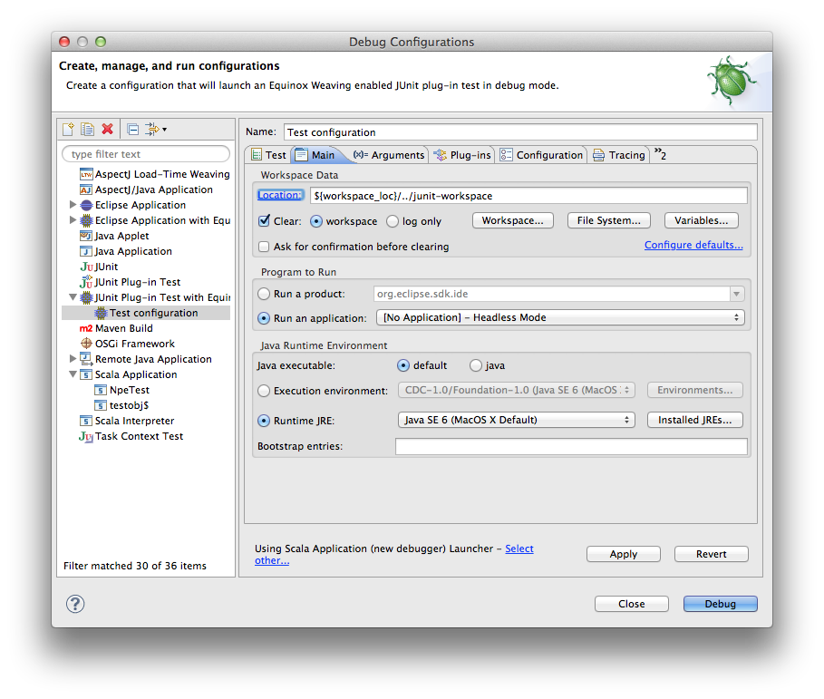

Setup
In this page you will learn everything you need to know to setup the Scala IDE project in Eclipse. You are literally instants away from being all set and ready to start hacking the Scala IDE sources!
Requirements
- Eclipse 4.4 (Luna), including PDT and JDT. Look for Eclipse IDE for Eclipse Committers, which comes with Eclipse Plug-In Development Environment pre-installed.
- The Eclipse Plug-in Development Environment, which ships with the Eclipse SDK (Eclipse IDE for Eclipse Committers) but may need to be installed manually. Choose Help > Install New Software..., select the Luna Update Site, then install General Purpose Tools > Eclipse Plug-in Development Environment.
- The Scala IDE nightly for Scala 2.11. Make sure you are using the latest nightly
- Java 7 is recommended for Eclipse 4.4. Java 8 can also be used starting with PR 842
- Maven 3.
- Git and a GitHub account.
This document uses a script to build Scala IDE. If you are on Windows, you could try Cygwin. Otherwise, the Run the build section of the documentation describes the different steps to execute for a full build.
Fork the project
The first thing you should do is forking the Scala IDE repository, that will greatly simplify the process of sending us patches (remember to also read about the Workflow before creating pull requests).
If you are new to GitHub, read here to learn how to fork a project.
After forking the project, simply open a terminal and clone your own fork to download the project’s sources. The command for cloning the fork should be very close to the following one (mind that you will have to replace <username> with your actual Git username).
$ git clone git@github.com:<username>/scala-ide.git
Make sure to add an Upstream pointing to the original Scala IDE git remote repository, so that you can keep fetching the latest changes made in the project, and easily integrate them back in your fork.
Pull the libraries
The Scala IDE projects uses libraries which are pulled during the build process and copied in the target/lib folders. So let’s run the build.
From the project root, run the following command if you are using Scala IDE with Scala 2.10:
$ ./build-all.sh
Or, you can pass a different profile for building the Scala IDE with Scala 2.11:
$ ./build-all.sh -P scala-2.11.x -P eclipse-luna clean install
If you want more information concerning the build, check out Run the build.
Import the projects into Eclipse
The Scala IDE project already contains the metadata files needed by Eclipse to setup the project. To import the Scala IDE in your workspace simply click on File > Import. The Eclipse Import dialog will open. There, select General > Existing Projects into Workspace and click Next. A new dialog will open. Browse to the folder that points to your cloned Scala IDE project’s and select it.
A list of projects should then be loaded in the below white area. The only projects that you absolutely need to import in Eclipse are org.scala-ide.sdt.core and org.scala-ide.sdt.core.tests. Select only those and click Finish.
Note
If you want to hack on the Debugger it may be necessary for Linux systems to add the tools.jar to the classpath. This can be achieved by navigating to Preferences → Java → Installed JREs and adding the JAR to the JRE that builds your sources. The JAR itself can be found at <path-to-JRE/lib/tools.jar>.
If after rebuilding you see any errors, drop us a note in the Scala IDE Developer Mailing List.
Install the Scalastyle plugin
The Scala IDE uses Scalastyle to ensure a clean code base. Thus, while it is not absolutely necessary, we recommend to install the Scalastyle plugin that will show errors whenever the style rules are violated. The update site for the plugin can be found on the homepage of Scalastyle.
After installing the plugin one needs to add the Scalastyle configuration of the Scala IDE. This can easily be done in Window → Preferences → Scalastyle → Browse/Add, where the configuration can be found at <path-to-scala-ide>/org.scala-ide.sdt.core/scala-ide-style-config.xml. The Scalastyle builder is already added to all projects that should be checked, thus no further configuration is required.
It is also possible to run Scalastyle on the shell. For this type
mvn scalastyle:check
in the root directory of the Scala IDE to invoke Scalastyle.
Run the Scala IDE within Eclipse
So, you managed to have the Scala IDE sources compiling, now it’s time to learn how to run the Scala IDE within Eclipse.
Doing this is especially useful if you need to do some manual debugging of the plug-in. Since the Scala IDE uses weaving, you need to launch the IDE with weaving enabled, which is not configurable in the vanilla launcher.
That is why we suggest you to install the Equinox Weaving Launcher.
Install the Equinox Weaving Launcher
To install the Equinox Weaving Launcher, use the following Eclipse update site:
This adds two more launch configurations: Eclipse Application with Equinox Weaving, and JUnit plug-in test with Equinox Weaving.
Create a run configuration for launching Eclipse with Scala IDE
To create a run configuration, right click on the org.scala-ide.sdt.core project and select Run As > Equinox Weaving enabled Eclipse Application. That should fire up a second Eclipse instance. To quickly test that all is working fine, try to create a Scala project.
You are now ready to hack on the Scala IDE. Start by looking around, do some change and observe what happens when you launch the second Eclipse’s instance.
Read the rest of the developer documentation to get more insights about the overall architecture.
Run the test suite inside Eclipse
You can use the built-in JUnit runner to run or debug the tests inside Eclipse. As for the normal run, you need to the Equinox Weaving Launcher. In the Run Configuration Dialog, create a new configuration using the JUnit Plug-In test with Equinox Weaving. Make sure you selected the org.scala-ide.sdt.core.tests project, and choose the test class you want to run (use scala.tools.eclipse.TestsSuite to run all tests).
In the Main tab make the following adjustments:
- Choose Run an application: [No Application] - Headless Mode.
The window should look like this:
In the Arguments tab, make sure to add the following arguments to the VM arguments list:
-Dsdtcore.headless -Dsdtcore.notimeouts
The first one tells the IDE to not try to open any windows or dialogs, while the second one disables timeouts for certain actions (otherwise, on a slow or overloaded system, the tests might fail simply because of a timeout).
Additional information
org.scala-ide.sdt.aspects project
The Scala IDE uses AspectJ to weave into Eclipse and hook in to JDT internals. If you want to work on JDT integration within the Scala IDE, then it is a good idea to import org.scala-ide.sdt.aspects project in your Eclipse workspace and also install the AspectJ Eclipse plug-in.
Using JRebel
If you want to use JRebel, there are two things you need to know:
- You can simply add -noverify -javaagent:path/to/javarebel.jar to the VM arguments in the run configuration. For Windows, this is -noverify "-javaagent:C:\Program Files (x86)\ZeroTurnaround\JRebel\jrebel.jar".
- JRebel is free for Scala users, see Free JavaRebel for Scala users, ZeroTurnaround announces.